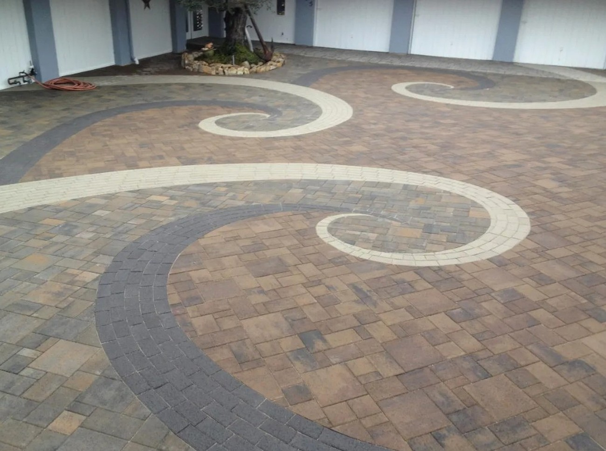
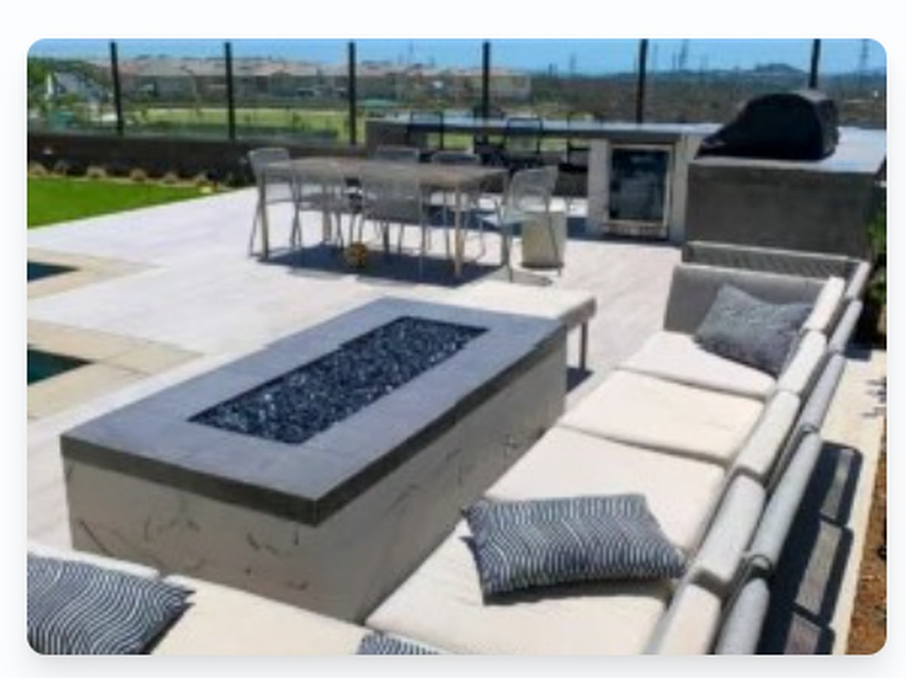
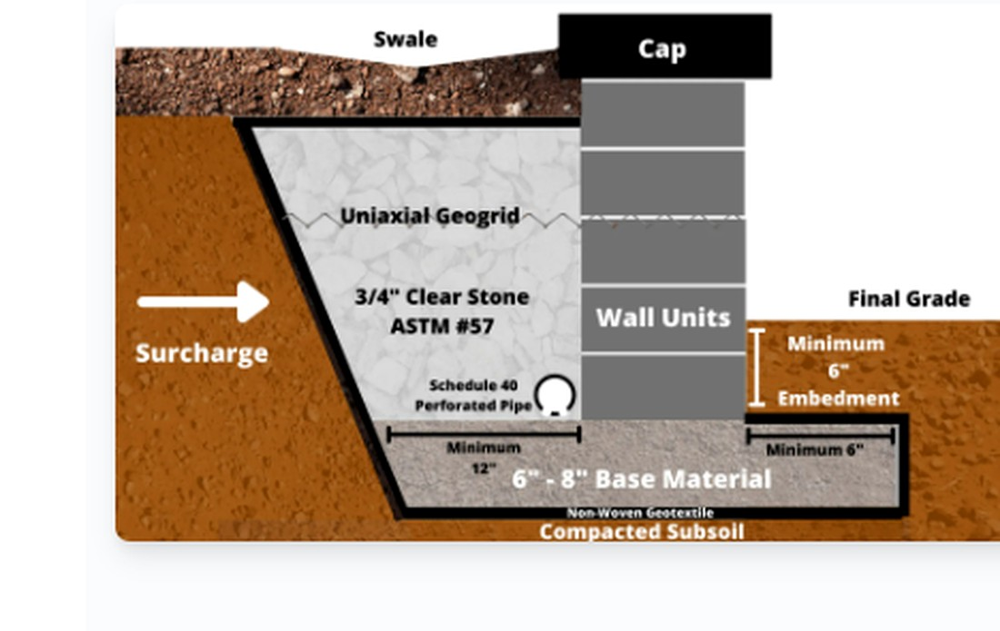
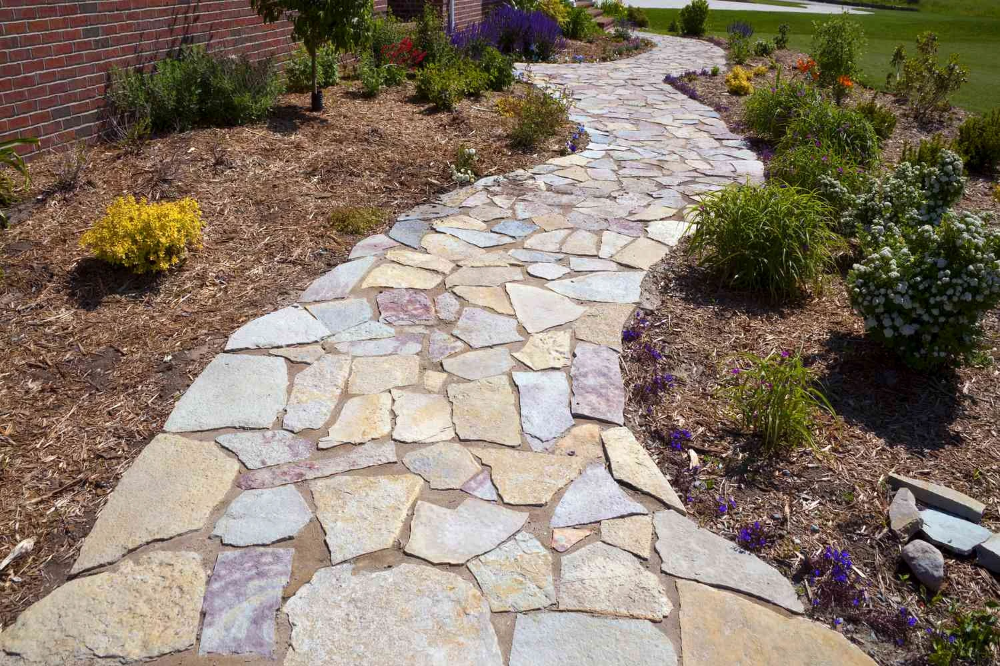
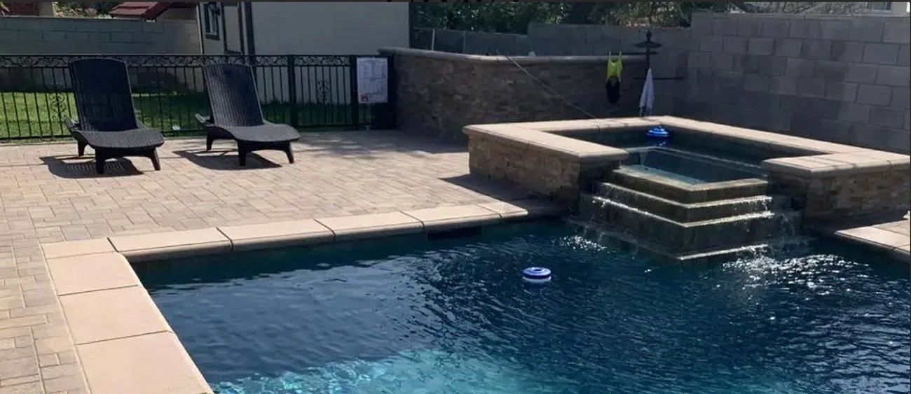
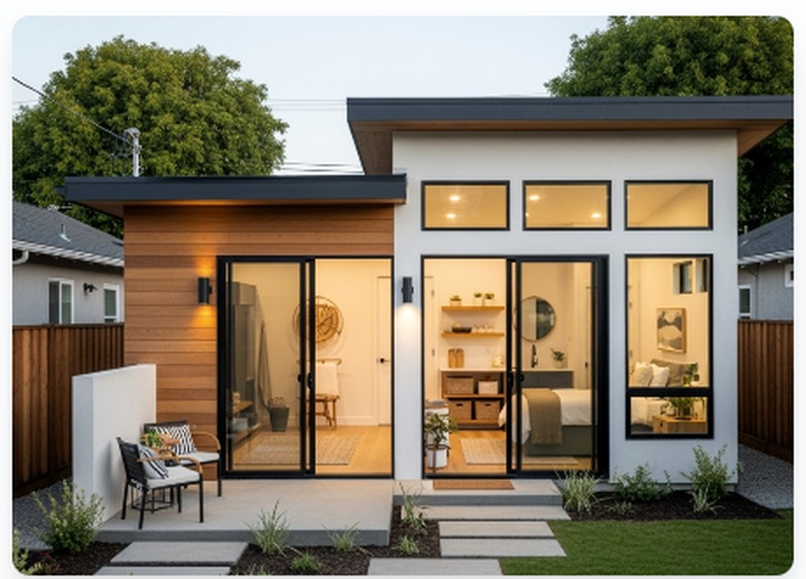
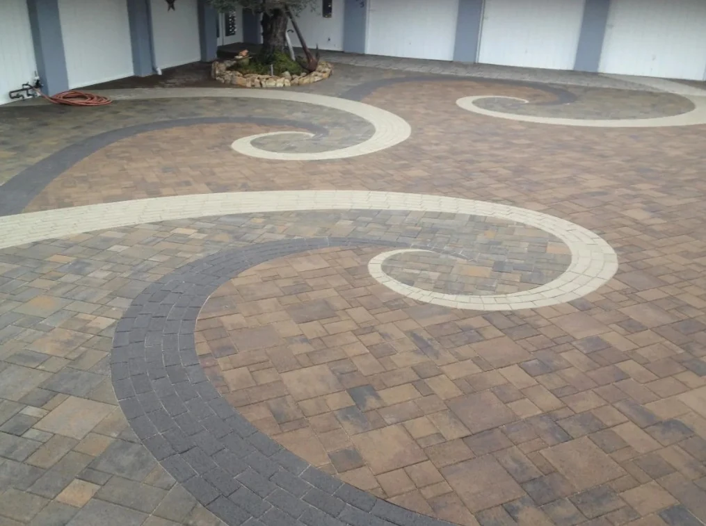
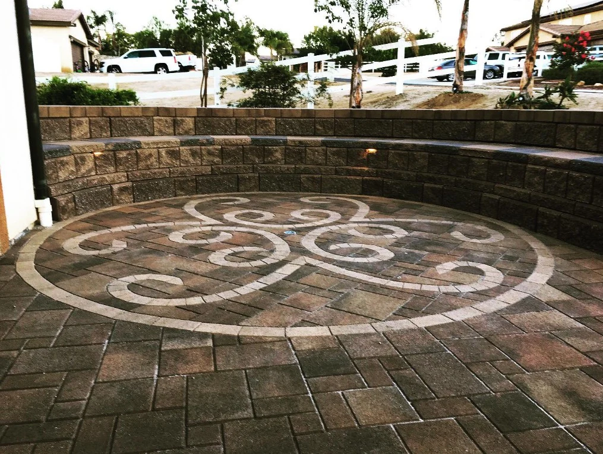

Worn Concrete
Replace cracked, stained, or uneven areas with properly prepared pavers, concrete, stone, and durable finish systems.
Navo Builders · Orange County design-build craftsmanship
Navo Builders delivers hardscape design and installation OC homeowners can trust—from custom driveway pavers Orange CA and patios to retaining walls, outdoor kitchens, pool deck pavers, landscaping, masonry, and complete outdoor remodeling. Work with a licensed hardscaping contractor Orange County families can call for durable construction and clear communication.
Built for beauty, drainage, and long-term performance
Cracked concrete, poor drainage, steep grades, and disconnected outdoor spaces can limit the way a property looks and functions. Navo Builders combines Hardscaping, Pavers, Landscaping, Masonry, and Remodeling into a cohesive design-build approach for Orange County homes.
Replace cracked, stained, or uneven areas with properly prepared pavers, concrete, stone, and durable finish systems.
Improve grading, runoff control, and property protection with integrated drainage and engineered retaining solutions.
Create defined areas for dining, entertaining, relaxing, parking, guests, rental income, and everyday California living.


Local expertise across Orange County
Navo Builders provides hardscape design and installation across Orange County, tailored to each property's architecture, grade, drainage, and everyday use. From custom pavers to complete outdoor living spaces, every project includes thoughtful planning, clear material guidance, and lasting workmanship.
Hire a top hardscape contractor in Orange, CA for custom driveway pavers, or work with a paver patio builder Villa Park homeowners trust for courtyards, walkways, outdoor kitchens, and entertaining spaces.
Schedule an Anaheim Hills hardscape installation, work with a retaining wall contractor in Anaheim, CA for slope and drainage needs, or plan your project with an outdoor living space builder in Brea, CA and North Orange County.
Choose custom paver patio installation in Yorba Linda, access complete Tustin hardscaping services, or partner with a North Tustin patio and paver contractor for refined, property-specific outdoor construction.
Plan an Irvine paver driveway installation, a Costa Mesa outdoor remodel, a luxury Newport Beach hardscape design, or Huntington Beach pool deck pavers with coordinated materials and premium finishes.
Our expertise: Hardscaping | Pavers | Masonry | Remodeling
Select a service to view the full scope, benefits, project images, and consultation options.

Beautiful paver and concrete driveways that enhance your property's curb appeal.
Learn More
Complete outdoor transformations with patios, fire pits, and outdoor living spaces.
Learn More
Professional slope solutions and drainage systems for stable landscaping.
Learn More
Elegant pathways and paving solutions for beautiful outdoor navigation.
Learn More

Custom accessory dwelling units designed to maximize property value and functionality.
Learn MoreNavo Builders project portfolio
Explore completed Pavers, Masonry, outdoor kitchens, patios, pool environments, fire features, Landscaping, and exterior Remodeling.
Select any project image for a larger view.

Hands-on hardscape expertise, responsive communication, and a standard of workmanship built around the homeowner’s vision.
Why homeowners choose Navo Builders
High-end outdoor construction requires careful site preparation, drainage awareness, clean transitions, accurate masonry, and responsive communication. Navo Builders brings proven field experience into a consistent design-build process.
Details are reviewed in the field so the finished work feels intentional, solid, and properly integrated.
Layouts, materials, patterns, elevations, and features are selected for the property—not copied from a template.
Expect practical recommendations, responsive coordination, and a clear understanding of the project scope.
Work with a licensed and insured California contractor serving Orange County under CSLB #1126018.
“James responded the same day… Alfredo started, worked four days and completed as promised. Hire Navo Builders and you won’t be sorry.”Barbara N.Homeowner review featured by Navo Builders
“I would definitely hire Navo Builders again.”Verified project clientPublic Thumbtack feedback
“The project was completed by my lead landscape contractor, and they did an amazing job.”Construction partnerPublic project feedback
Ideas for Your Next Project
Explore practical planning advice about pavers, retaining walls, patio costs, outdoor kitchens, and hillside drainage.

PaversCompare durability, heat, maintenance, repairs, and long-term value before selecting a driveway or patio surface.
Read Article Masonry & Permits
Masonry & PermitsReview common wall-height, surcharge, slope, engineering, and local permit considerations before construction.
Read Article
Cost GuideUnderstand the material, access, demolition, drainage, and design factors that influence a custom patio budget.
Read ArticleUse compact islands, built-ins, coordinated materials, and right-sized appliances to make a small yard work harder.
Read Article Drainage
DrainageLearn how drains, terraced walls, permeable pavers, and proper grading can protect a hillside property.
Read ArticleLocal hardscaping questions
Start with the essentials, then schedule an on-site conversation for recommendations specific to your property.
Ask About Your ProjectNavo Builders provides Hardscaping, Pavers, Landscaping, Masonry, and Remodeling, including custom patios, driveways, retaining walls, outdoor kitchens, pool deck pavers, water features, and exterior hardscape improvements throughout Orange County.
Yes. Navo Builders operates as a licensed and insured California contractor under CSLB license #1126018.
Yes. Navo Builders installs paver and concrete driveways in Orange and surrounding Orange County cities, including custom patterns, base preparation, grading, drainage planning, repair, and restoration.
Yes. Custom ADU construction and hardscaping can be planned together so utility access, drainage, pathways, patios, landscaping, and exterior finishes work as one cohesive property design.
Primary service areas include Orange, Villa Park, Anaheim Hills, Anaheim, Brea, Yorba Linda, Tustin, North Tustin, Irvine, Costa Mesa, Newport Beach, Huntington Beach, and nearby Orange County communities.
Complete the form to prepare a direct project request for Navo Builders.
Tell us what you want to improve. We’ll help define the right next step for a driveway, paver patio, retaining wall, outdoor kitchen, pool deck, landscape, masonry, or full outdoor remodel.
Tell us what you want to improve. We’ll review your goals and help define the right next step for your hardscaping, driveway, landscape, masonry, pool deck, remodeling, or ADU project.
Orange County service area: Orange, Villa Park, Anaheim Hills, Anaheim, Brea, Yorba Linda, Tustin, North Tustin, Irvine, Costa Mesa, Newport Beach, Huntington Beach, and surrounding communities.